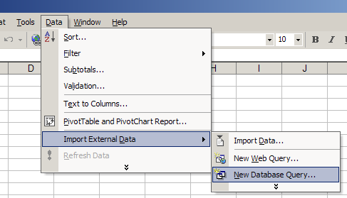
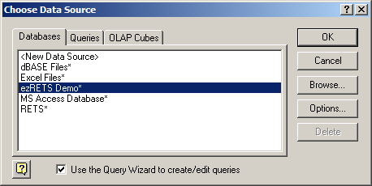
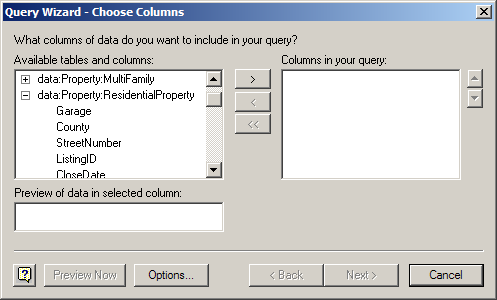
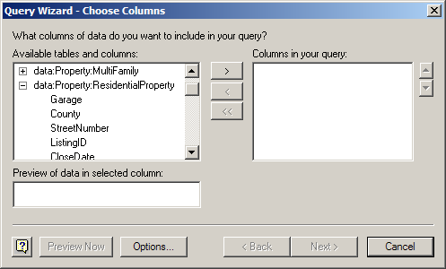
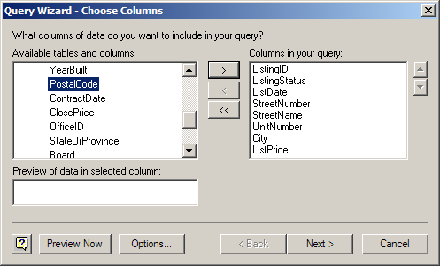
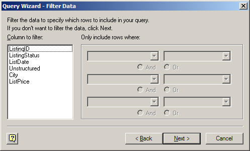
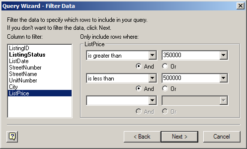

The ezRETS ODBC driver, from the Center for Realtor Technology at the National Association of REALTORS®, was designed to allow ODBC-aware applications to easily query data from any Multiple Listing Service that supports the RETS standard. Many of the programs in Microsoft Office can utilize ezRETS to integrate real estate listing data directly into your own custom documents. The following is a short tutorial that demonstrates how to do this in Microsoft Excel.
For this tutorial, you'll need:
The latest version of the ezRETS driver, which can be obtained from the web site http://www.crt.realtors.org/projects/rets/ezrets/
An ODBC ezRETS data source named "ezRETS Demo" which is set up to connect to the ezRETS demo RETS server. Information on how to do this is available at <insert URL here>
An installation of Microsoft Office that includes Excel. The images and examples in this tutorial come from Microsoft Office XP, but the same steps should work in other versions with only slight differences.
Create a new blank workbook in Microsoft Excel.
Click on the menu on Excel's main menu bar, navigate to the submenu, and select the menu item:
Excel will then open up the Microsoft Query application, which will present a window asking you to choose the data source you want to access. For this tutorial, select the ezRETS Demo data source:
Make sure that the checkbox next to is checked.
Click .
The Query Wizard - Choose Columns window will appear next, presenting a list of tables that are available from the MLS system.
For this tutorial, find the data:Property:ResidentialProperty table under Available tables and columns:. To the left of it, you'll see a
 icon. Click on this icon to reveal the list of
columns that exist in this table:
icon. Click on this icon to reveal the list of
columns that exist in this table:Select the ListingID column from the list that appeared below data:Property:ResidentialProperty, and click the button. The column name will move over to the list on the right side of the window, to indicate that it will be included in the results of your query.
Repeat step 7 for a few other fields as well. Include at least the ListingStatus and ListPrice columns, as we'll need those later on in the tutorial.
Your screen should now look something like this (a few more columns have been added besides the ones mentioned above):
Caution
Don't select columns from more than one table! While the Query Wizard will let you do this, it isn't supported by the ezRETS driver, and will cause an error message when you try to go to the next screen of the Query Wizard.
Click to move on to the Query Wizard - Filter Data window, where you can define the criteria for your query:
Tip
Criteria can be defined for any of the columns that you added to the query in the previous window. For example, you could have the query look only for a specific listing number by adding a criteria for the ListingID field.
For this tutorial, we're going to limit the query to look only for active listings in a certain price range. Start by selecting the ListingStatus column under Column to filter:.
When you do this, the first drop-down menu will activate. In this drop-down, select equals.
The field to the right of the menu will then activate; in this field type in "Active". This will limit the query to only returning listings that are currently active. Your screen should now look like this:

Caution
You must define at least one filter criteria for a RETS query. Due to limitations in the RETS protocol, the ezRETS ODBC driver will not return any results unless you define at least one criteria.
Next, select the ListPrice column under Column to filter:. When you do this, the information on the right side of the screen will reset; this is because we haven't added criteria for ListPrice yet. You will also see that the ListingStatus entry on the left is now in bold print, which indicates that criteria have been entered for that field. If you click on ListingStatus again, the criteria for that field will be displayed again.
After selecting ListPrice, select is greater than from the first drop-down.
Enter "350000" in the field to the right of the drop-down..
The next drop-down will then activate, and the button will be selected by default. In that drop-down, select is less than, and enter "500000" in the field to the right of it.
Tip
The And button between the first and second drop-down tells the MLS service that a listing must match both of these criteria to be included in the query results; if you select , then a listing will only need to meet at least one of the two criteria to be included.
The criteria for ListPrice should look like:
Click Next.
On the next window, Query Wizard - Sort Order, click Next. Due to limitations in the RETS protocol, ezRETS does not provide any sorting capabilities.
On the next window, Query Wizard - Finish, select :

Click .
The last dialog asks where you'd like the data to be written. You have the choice of creating a new table of data starting at an existing cell in the workbook, or to put the new data into a new sheet. For this tutorial, select , then click OK:

Once you've finished the last step, Excel will run the query and add a new sheet to your workbook with the results. You should have a new sheet that looks something like this:
As you can see, the results are returned in a table format, with column names in the first row, and one MLS listing in each following row. In the above example we have two separate listings, one on row 2 and one on row 3. You can now create references to this data on other sheets in the workbook using cell references and formulas like you would with any other data in Excel. In addition, if you go to the menu, to the submenu, and select , you'll see that Excel has defined a named range corresponding to your query that you can also utilize in cell formulas such as summations. (For more information about named ranges, consult Excel's built-in Help.)
Behind the scenes, Excel actually saves the information necessary to re-run the query and retrieve this data again. Thus, you can easily come back later on and bring the data up to date with any new information that may have appeared in the listing service. Just go to the sheet that has the data on it, right-click on a cell within the data, and select :
That's it! You now have an Excel spreadsheet that can retrieve live data from your Multiple Listing Service, and update that data anytime you wish.